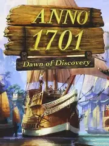

 |
|
| Tiempo de juego | 4m 14s |
| Última actividad | 16/1/2026 11:04:27 |
| Añadido | 20/11/2025 16:44:23 |
| Modificado | 20/11/2025 16:45:34 |
| Estado de finalización | Jugado |
| Librería | Playnite |
| Fuente | |
| Plataforma | PC (Windows) |
| Fecha de lanzamiento | 8/6/2007 |
| Puntuación de la Comunidad | 52 |
| Puntuación de la Crítica | 82 |
| Puntuación de usuario | |
| Género | Real Time Strategy (RTS) Simulator Strategy |
| Desarrollador | Keen Games |
| Editor | Disney Interactive Studios |
| Característica | Co-Operative Multiplayer Single Player |
| Enlaces | Official Website |
| Tag | |
Bienvenidos al siglo XVIII. Anno 1701 (también conocido como 1701 A.D.) es el título que marcó un antes y un después en esta legendaria saga de gestión, dando el salto a un entorno completamente en 3D lleno de vida y color.
Tu misión: Navegar, desembarcar, construir, comerciar y... ¡satisfacer a los caprichosos de tus ciudadanos!
Anno 1701 es la mezcla perfecta de relax y obsesión por la eficiencia. Un constructor de ciudades precioso donde el objetivo final es tener una metrópoli gigante y feliz a la que no le falte ni un gramo de tabaco.